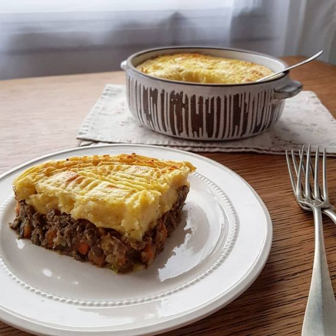

El Rincón De Las Recetas
Inicio
Recetas Dulces
Recetas Saladas
Recetas Saladas Paso a Paso
Pastel de Papa
Ingredientes

Cortar las papas en cubos y ponerlas a hervir con sal.
Picar la cebolla, el ajo y el pimiento morrón.
Calentar el aceite en una olla o sartén y sofreir la cebolla, el pimiento y los ajos.
Cuando la cebolla está transparente, agregar la carne y sofreirla mientras se deshace con una cuchara.
Salpimentar, agregar la pastilla de caldo, el ajo en polvo, el pimentón y cocer la carne 15min
Una vez que las patatas estén hervidas, hacer en caliente un puré con la manteca y la leche. Salpimentar.
Poner en una fuente para horno una base de puré, agregar por encima la carne (dejar que se entibie un poco) y colocar otra capa de puré. Para distribuirlo, se moja la cuchara con agua fría.
Llevar a horno fuerte o gratinador unos 15-20 min. o hasta que la parte de arriba esté crocante.
Puede agregarse al relleno de carne un huevo picado, olivas verdes picadas o pasas de uva.
1KG de papas
1/2KG de carne picada
1 cebolla
1/2 morron
Dos ajos
Pimentos, sal y pimienta
100ml de leche
Nuez moscada y manteca
Aceite
Cortar las papas en cubos y ponerlas a hervir con sal.
Picar la cebolla, el ajo y el pimiento morrón.
Calentar el aceite en una olla o sartén y sofreir la cebolla, el pimiento y los ajos.
Cuando la cebolla está transparente, agregar la carne y sofreirla mientras se deshace con una cuchara.
Salpimentar, agregar la pastilla de caldo, el ajo en polvo, el pimentón y cocer la carne 15min
Una vez que las patatas estén hervidas, hacer en caliente un puré con la manteca y la leche. Salpimentar.
Poner en una fuente para horno una base de puré, agregar por encima la carne (dejar que se entibie un poco) y colocar otra capa de puré. Para distribuirlo, se moja la cuchara con agua fría.
Llevar a horno fuerte o gratinador unos 15-20 min. o hasta que la parte de arriba esté crocante.
Puede agregarse al relleno de carne un huevo picado, olivas verdes picadas o pasas de uva.